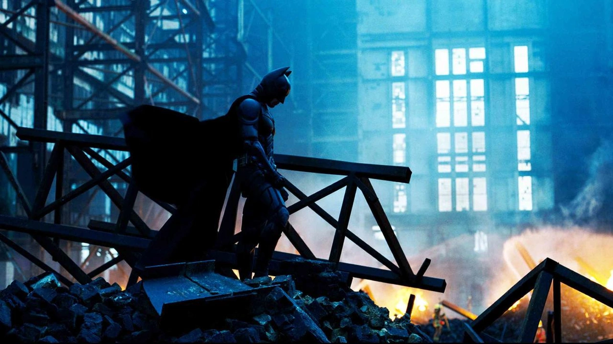

1. The Shawshank Redemption (1994)
Two imprisoned men bond over a number of years,
finding solace and eventual redemption through acts of common decenc y.
5 DOLAR 9.99 DOLAR

2. The Godfather (1972)
The aging patriarch of an organized crime dynasty in postwar
New York City transfers control of his clandestine
empire to his reluctant youngest son.

3. The Dark Knight (2008)
When the menace known as the Joker wreaks havoc and chaos on the people
of Gotham , Batman must accept one of the greatest
psychological and physical tests of his ability to fight injustice.
Not: İzleyip de beğenmiyorsanız gidin aşkı memnu izleyin.